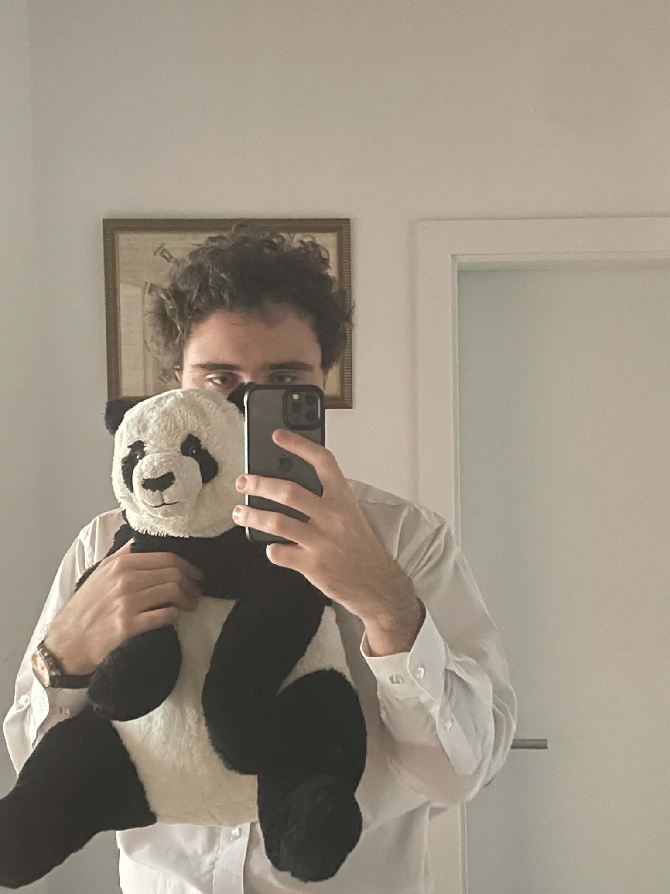

Letter to mommy (remake!)
There are a lot of things I wanted to tell her. There are a lot of explanations and everything, so I made a letter to her.
DISCLAIMER: Toto je pro slečnu jménem Týnka. Pokud nejste Týnka a myslíte si, že to je pro Vás, tak tomu určitě tak není!
letter.pdfI am tired of it
Pls pokud to někdy přečteš, tak si pojď prosím promluvit. Už hodně dlouho tady píšu nějaké updates a fakt se to snažím napsat co nejlíp, ať to uvidíš.
Ale idk jestli jsi to někdy tady přečetla. Doufám, že jo a že i tě to pobavilo. Idk jestli jsi četla dopis. Prosím pochop, že sem nemohu psát hodně věcí. Rád bych ti to řekl osobně nebo napsal do zpráv, ale upřímně se bojím, protože jsi řikala, že se nechceš bavit a já nechci rušit tvůj klid.
Dávám do toho svůj čas, ale nikdy z toho nedostanu nic nazpět. Snažil jsem se, abych dostal od tebe poslední šanci, ale čím dál tím míň pravděpodobný je, že ji dostanu.
Kdybys někdy chtěla dat poslední šanci našému přátelství, tak mi napiš sama a budu moc rád. Upřímně to bylo s tebou moc hezký a vzpomínám na to, jak jsme spolu trávili čas jen v dobrým. Ano, uznávám, že jsem se tenkrát zachoval jako idiot, ale teď jsem se hodně napravil, studuji dvě školy, chodím do práce a chodil jsem za psycholožkou. A upřímně za sebe bych tomu dál ještě jednu šanci, protože jsi byla moc dobrá kamarádka.
Já opravdu nenapíšu první, protože když jsem se tě snažil kontaktovat před dvěma lety, tak jsi se na mě jen zlobila. A zase mám nějakou jistotu, že to děláš ty, ale nejsem si jistý na všech 100% a kvůlí tomu nechci porušit No Contact. Mnohokrát jsem přemýšlel, že ti napíšu, ale No Contact je iniciovaný z tvé strany, proto jsi to ty, kdo to může zrušit.
A proto ti ani neříkám jménem, protože bylo by divné najít své jmeno na nějaké random stránce svého ex kamaráda.
Už ani moc nemám čas na to sem něco přidávat a mně přijde, že zkusil jsem opravdu všechno. A táto stránka musí být gone, až přijdou další questy, aby to nikdo nenašel.
Vím, jak moc respektuješ svoji privacy a proto jsem tady nezmínil žádná jména a žádné další GDPR informace. I tak je toho tady hodně, za což se omlouvám. Ale myslím si, že rozhodně chápeš, pro koho je to určený.
A nezlob se na mě, že jsem si tě naposledy zablokoval na Instagramu. Musel jsem ověřit, že mi klesnou views profile (já do té doby furt jen předopkládal, že mě stalkuješ, ale teď to vím jistě, žes to byla ty).
Kdybychom se už nikdy nebavili, tak Ti moc děkuji za všechno a měj se moc hezký!
A co že to vlastně bylo?
Začálo to Adélou. Byl to quest pro moje kamarády, přišel jsem s tímto nápadem už dávno, že musím udělat nějakou hádanku pro Toníka, a pak jsem si řekl, že se na to chytnou i další lide. Ale celý se mi to zdálo divné.
Ale Adéla opravdu neexistuje. Je to jen vtipná postava pro mé kamarády, jak už jsem říkal. A je to jeden velký larp. Adélka byla v IT, protože musel jsem na to nalákat kamarády. A na začátku byla clean girl blondýna, a pak v komiksech byla nějaká tattoed goth girl (idk jestli jsi je četla, ale tam v posledním šlo o to, že ty máš novýho hezkého přítele a já mám Adélu a prostě se všichni navzájem usmíříme a tak a tys vždy žárlila na nějaké potetované slečny s barevnými vlasy, ale idk proč by se mi líbil někdo kdo trochu smrdí). Proč jsme spolu chodili 5 let? Protože musel jsem nějak odůvodnit tu velkou hru. A celou dobu jsem tam psal, ať se mi někdo ozve, že se na to dívá, tak jsem doufal, že to uvidíš a že se ozveš. A POŘÁD DOUFÁM, ŽE SE JEDNOU OZVEŠ (actually 🐼🐼🐼).
Vlastně toto byl celý letter for you ve zkrátce. A říkám tomu letter, protože vím, že jsi měla je ráda. Jo, a byla tam ještě panda na konci, protože je máš rádá (stejně jako Denyse možná) 🐼🐼🐼
Jo, a smazal jsem všechny reposty na ig, protože byl to trochu larp a musel jsem být trochu unhinged. A odblokuj si mě na ig pls pls pls 🐼🐼🐼. (actually pokud bychom se kamarádili, tak bych ti mohl posílat Reelska do DMs 🐼🐼🐼). A můžeš mi normálně dat follow na ig (chci ti posílat Reelska) 🐼🐼🐼.
A mohl bych byt jako Jesnsen Huang a NVIDIA, že jsme se znova vrátili k sobě.
D.
SUSHI!!!
Můžeme se prosím přestat hádat a jít na sushi? Pls pls pls, jen mě to napadlo, když jsi měla narozky. Nebo na dort. Pls. A promluvíme si (měli jsme to udělat již před dvěma lety). A nebudeme se už nikdy hádat a "uzavřeme mír" (idk jak to nazvat, ale chápeš).
🐼🐼🐼🐼🐼🐼🐼🐼🐼🐼🐼 (this is me, ale na sushi chtěl Denys)
They got flying cars and GTA VI before jsme se usmířilí.
RATE MY FIT
Rate my (pan Pandas) fit (ignore Denys).
KDYBYS CHTĚLA VIDĚT DENYSE, TAK ASI 14.12. BUDE PŘEDSTAVENÍ (idk jsetli víš ale Denys chodí do studentského divadla) a můžeš třeba přijít, pak sem hodím čas atd.


How to read?
Je tam nějaký heslo, má čtyři slova, neuhádneš ho, ale pojď na sushi. Pokud chceš, pošlu ti ho na mail nebo do zpráv.
Má Denys opravdu problémy s hlavou, že tohle vymyslel?
Denys chodil za psycholožkou a je v pohodě, navíc teď si z toho trochu dělá srandu (ale myslí vážně, že se nechce hádat a chce na sushi, ale vymysleli jsme s nim mega vtipný comics). Actually mohli byste tam někdy zajít spolu s Denysem (a je to myšleno vážně).
Are you trying to offend me? (most important)
No, Denys tě má rád.
Should we talk?
Ano, prosím prosím prosím moc moc moc. 🐼🐼🐼🐼🐼🐼🐼🐼🐼🐼🐼🐼
Birthdays
Tento rok jsem ti bohužel nemohl popřát, ale třeba někdy in another life. Také jsi mi nepopřála k narozkam. A tento nápad pozvat tě na sushi vznikl z toho, že je máš ráda.
A actually si na tebe vzpomínám každý rok na své narozky. Vždy si říkám: "Sakra, zase jsem se nenapravil tento rok a ona mi nepopřála". Protože pamatuji, jak jsi mi napsala tenkrát když jsem šel s mamkou z kina a jak jsi řikala, že kdybych byl normální, tak bychom udělali moji oslavu s balónky (BTW I HATE BALONKY, PROTOŽE PRÁSKAJÍ COŽ JE PROSTĚ NORMAL AUTISTIC TRAIT).
Ale já se snažím každý rok napravit a třeba to někdy v příštím životě vyjde a dostanu Matlab cologne a já ti konečně dám husu. Anebo k Vánocům, pokud se přestaneme hádat do té doby a budeme kamarádi.
A tím, že se přestaneme hádat, vlastně myslím dvě věcí. Jedna je, že budeme kamarádi jako dřív a bude to super a všechno (protože Denys se změnil a opravdu si tě váží). A druhá je třeba to, že si jenom řekneme: "Ok, bylo to mega dobrý tenkrát, ale actually se nemusíme na sebe zlobit po těch letech, díky za všechno". A ty třeba řekněš: "Ano, chapu, ale vlastně se toho změnilo hodně a mám jíný život a nechci se dal bavit, ale sushi na usmířenou byly fajn". A to si musíš vybrat ty, co z toho chceš. (pls to první 🥺🥺🥺)
One more thing!
We are getting over the honeymoon phase of semester a občas Denys chodí unavený. Asi v pátek Denys byl v místním Lidlu a zdálo se mu, že tě viděl (asi ne, byla to podobná slečna, ale měla džiny a nějaký nový iPhone), ale bylo to před zavíračkou a už nemohl odejít.
Proto kdybyste se náhodou někde potkali, tak se nemusíš bat, snáží se odejít, a určitě za tebou nepřijde, stejně jako tenkrát, když tě potkával v autobusech.
Já jedině píšu na tuto stránku a Denys mě občas prosí sem něco napsat, ale určitě tě nechceme nijak sledovat. Jen táto stránka je jediný normální způsob tě kontaktovat a doufat, že to najdeš.
D and you?
You are not friends, because you both did and are doing a lot of stupid things. There is only Mr. Panda, who is trying to change something. Maybe you will finally stop arguing and be friends.
Komiksy
Ještě tu byly komisky, ale ty jsem smazal, protože Denys showed them to his mom and she said they are weird. And that you are never coming back and I am never getting the chance.
A actually to vždy zabere hromadu času, abych něco udělal, tak snad to někdy uvidíš. A dělám to jen proto, že finally se chci přestat hádat. And I miss you 🥺🥺🥺🫶🫶🫶